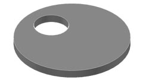
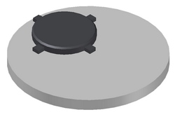
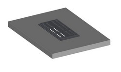

в Бресте:8 (0162) 53 – 16 – 68, 8 (029) 507 – 41 – 20 МТС
в Чернавчицах:8 (0162) 94-54-32, 8 (033) 644 - 54 – 32 МТС
|
Узнать актуальные цены и заказать продукцию можно по телефонам: в Бресте:8 (0162) 53 – 16 – 68, 8 (029) 507 – 41 – 20 МТС в Чернавчицах:8 (0162) 94-54-32, 8 (033) 644 - 54 – 32 МТС |
Без люка |
||||
|  | ||||
| Название | Размеры | Цены, BYN | Примечания | |
| ПП 10-0 инд. | на кольцо диаметром 1,0 м | 38,64 | крышка пешеходная | |
| ПП 15-0 инд. | на кольцо диаметром 1,5 м | 65,12 | крышка пешеходная | |
| ПП 20-0 инд. | на кольцо диаметром 2,0 м | 108,94 | крышка пешеходная | |
| ПП 10-2 Н | на кольцо диаметром 1,0 м | 65,28 | обычная крышка | |
| ПП 15-2 Н | на кольцо диаметром 1.5 м | 119,23 | обычная крышка | |
| ПП 15-2ц | на кольцо диаметром 1.5 м | 128,95 | с отверстием по центру | |
| ПП 20-2 Н | на кольцо диаметром 2,0 м | 212,36 | обычная крышка | |
| ПП 20-2ц | на кольцо диаметром 2,0 м | 240,52 | с отверстием по центру | |
С люком |
||||
|  | ||||
| ПП 10-2 Л Н | на кольцо диаметром 1,0 м | 152,52 | вмонтирован лёгкий люк тип Л | |
| ПП 15-2 Л Н | на кольцо диаметром 1,5 м | 186,62 | вмонтирован лёгкий люк тип Л | |
| ПП 20-2 Л Н | на кольцо диаметром 2,0 м | 272,95 | вмонтирован лёгкий люк тип Л | |
| ПП 10-2 Т Н | на кольцо диаметром 1,0 м | 201,84 | вмонтирован тяжелый люк тип Т | |
| ПП 15-2 Т Н | на кольцо диаметром 1,5 м | 245,92 | вмонтирован тяжелый люк тип Т | |
| ПП 20-2 Т Н | на кольцо диаметром 2,0 м | 335,38 | вмонтирован тяжелый люк тип Т | |
Под ливневую решетку |
||||
|  | ||||
| П(д) | 115 cm × 120 cm × 24 cm | 104,21 | ливневая решетка в комплект не входит | |
| П(Д) | 115 cm × 120 cm × 24 cm | 265,51 | вмонтирована ливневая решетка допускается монтаж на проезжей части |
|